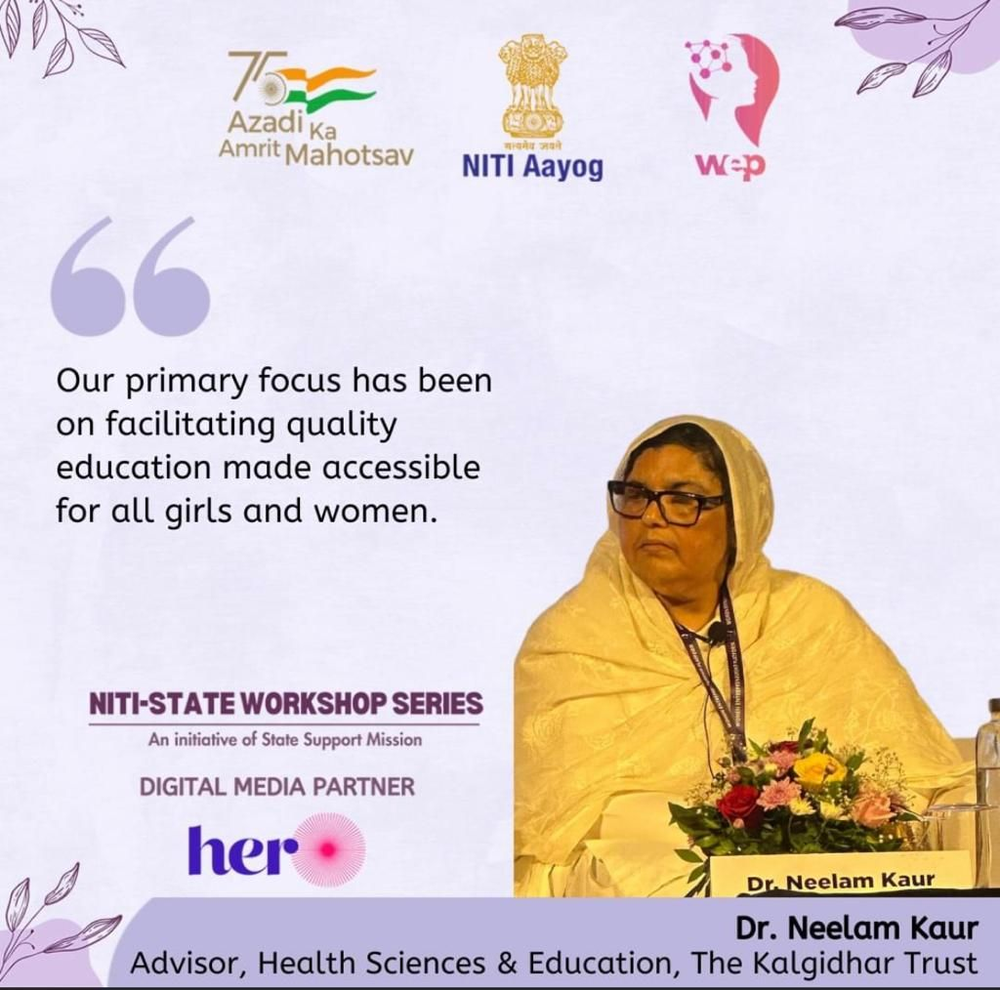
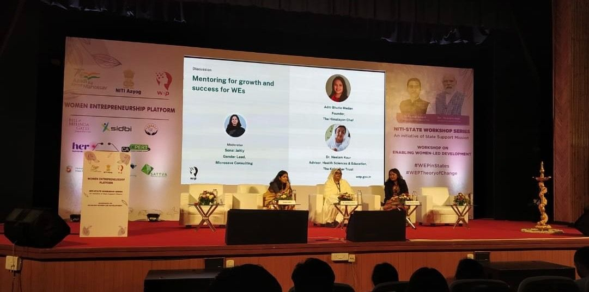

ਸੋ ਕਿਉ ਮੰਦਾ ਆਖੀਐ ਜਿਤੁ ਜੰਮਹਿ ਰਾਜਾਨ ॥
So why call her bad? From her, kings are born.( SGGS Ang 473)
It was humbling experience at the First state workshop under the Women Entrepreneurship Platform (WEP), a transformative event organized by NITI Aayog, Govt. of India, and the Goa State Government. This inspiring gathering took place on October 3, 2023, at the scenic CSIR-National Institute of Oceanography (NIO), Dona Paula, Goa, and brought together remarkable minds dedicated to empowering women entrepreneurs. The significance of women's entrepreneurship, underscoring the crucial role of mentorship in this journey was explored. The passion and deep sense of purpose was emphasised and the fundamental need for education forms the edifice upon which women can build their entrepreneurial dreams. Akal Institute of Rural Empowerment, a commendable initiative is taking giant strides in educating and empowering women across five states in rural North India. The event was graced by NITI Aayog Chairman Mr B.V.R Subramanyam and the Hon’ble Chief Minister of Goa, Dr. Pramod Sawant who whole heartedly supported the cause of nurturing women in business. Dr. Davinder Singh The Kalgidhar Society Akal Academy Baru Sahib.
link  Leadership lessons by Mandeep Kaur Tangra at Eternal University, Baru Sahib Sirmour, Himachal Pradesh. SimbaQuartz | #MandeepKaurTangra | #SimbaQuartz | #ChangingLives | #BeNiceAnyway | #ITVillage | #ReverseMigration | #WhiteCollarJobs | #TEDxSpeaker | #Tangra www.mandeepkaurtangra.com www.simbaquartz.com mandeep@mandeepkaurtangra.com
link